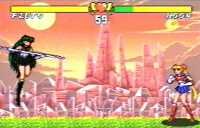

|


Review
Game Type: 2D Fighting
A basic SF2-style fighting game with standard SF2 controls. As in
SamSho you can press B, B to hop away from your opponent. You can
customize the characters' strengths by giving ability points to each
of six different attributes.
Gameplay: 50/100
Pretty comparable to Street Fighter II, but not nearly so complex
or well-polished. Most characters only have two or three special moves,
many of which are rather awkward. Worse still, the projectiles rely
on magic power to launch, and magic power can run out in the middle of
a fight. While this helps keep fireball wars from breaking out, it's
very frustrating to attempt a special move several times and have your
character left wide open when it fails. About the only interesting and
unique gameplay feature is the ability to determine any character's
strengths and weaknesses (like their HP and attack power) by
distributing attribute points.
Graphics: 70/100
The stages are great but there really aren't enough of them (a
couple are just nighttime versions of backgrounds seen in daylight
elsewhere). The character animation could be a lot better, too. Colorful
and cute but not very impressive visuals.
Sound: 50/100
The game has lots of lengthy voice samples of passable quality, but
they can be repeated enough during a match to get annoying. The music
is upbeat and fits in with the cute atmosphere, but isn't especially
remarkable.
Overall: 50/100
Fans of the Sailor Moon series (of which I am admittedly not one)
probably won't be too disappointed, especially with all the nice artwork.
It definitely won't be the game itself that keeps players' interest,
though. The gameplay is weak, and the small character roster and short
moves list don't help matters. No way it's worth the price of import
unless you are a hardcore fan.
|